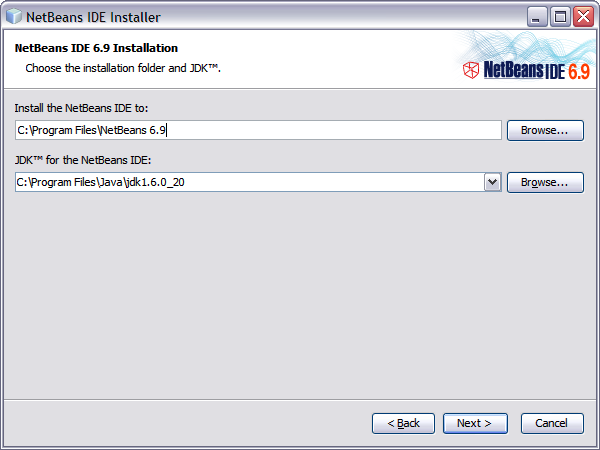
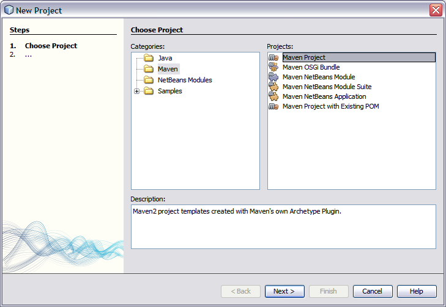
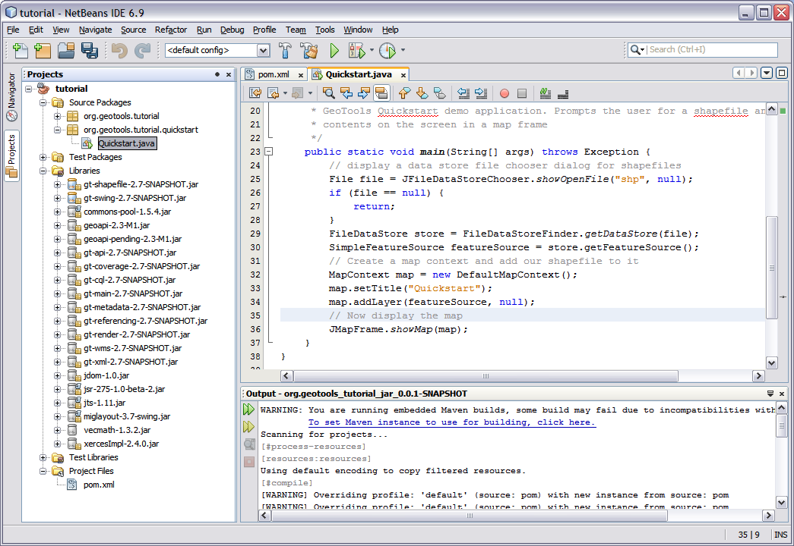
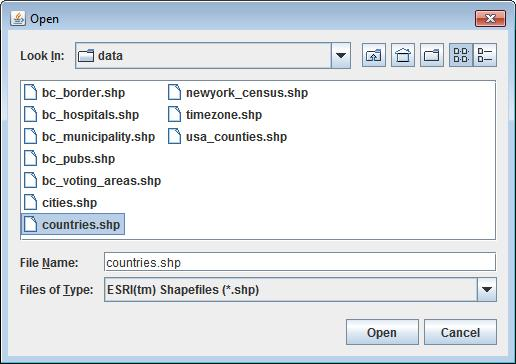
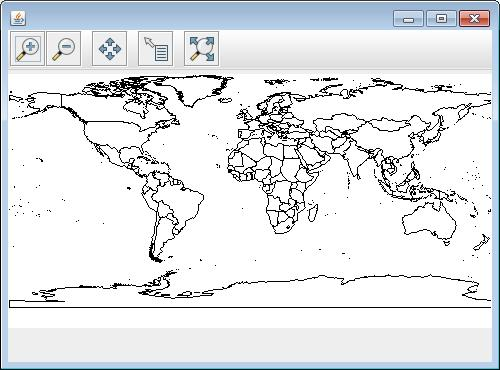
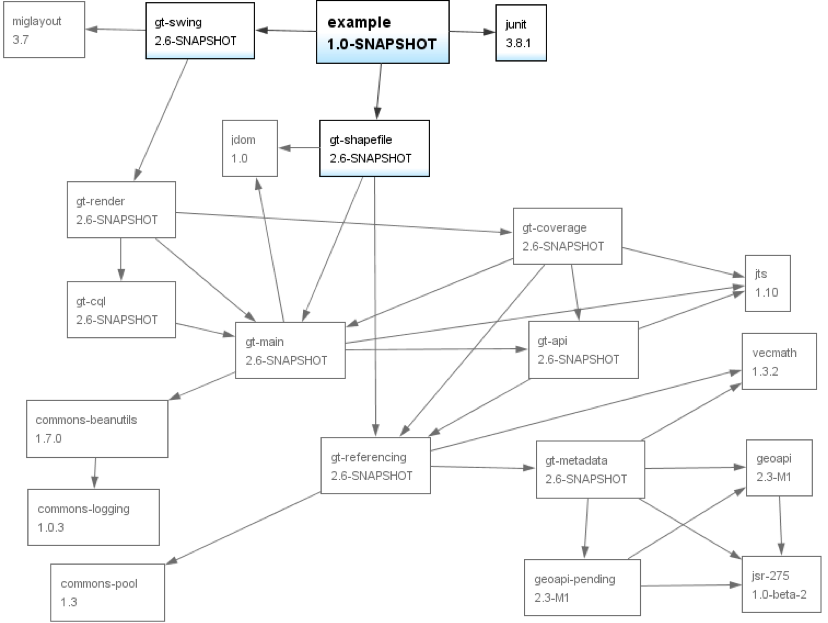
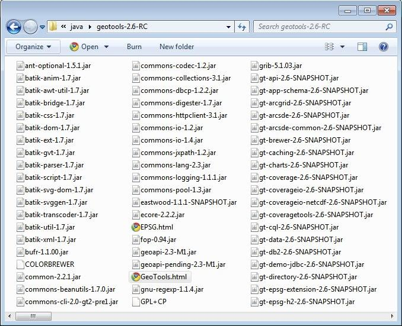

Netbeans Quickstart¶
Welcome NetBeans Developers¶
Welcome to Geospatial for Java. This workbook is aimed at Java developers who are new to geospatial and would like to get started.
We are going to start out carefully with the steps needed to set up your Netbeans IDE. This workbook is also available for Eclipse or Maven command line use. The build tool Maven (http://maven.apache.org/) is our preferred option for downloading and managing jars. GeoTools projects tend to use a large number of jars and an automated solution is preferable.
If you are already familiar with Maven that is an advantage but if not, don’t worry, we will be explaining things step by step and we will also document how to set up things by hand as an alternative to using Maven.
These are visual tutorials that allows you to see what you are working with while you learn. These examples make use of Swing; be assured that this is only to make the examples easy and fun to use. These sessions are applicable to both server side and client side development.
We would like thank members of the GeoTools users list for their feedback while were preparing the course material, with special thanks to Tom Williamson for reviewing early drafts.
Java Install¶
We are going to be making use of Java so if you don’t have a Java Development Kit installed now is the time to do so. Even if you have Java installed already check out the optional Java Advanced Imaging and Java Image IO section – both of these libraries are used by GeoTools.
Download the latest JDK from the the java.sun.com website:
At the time of writing the latest JDK was:
jdk-7u1-windows-i586.exe
Click through the installer you will need to set an acceptance a license agreement and so forth. By default this will install to:
C:\Program Files\Java\jdk1.7.0\
Optional: Java Advanced Imaging is used by GeoTools for raster support. If you install JAI 1.1.3 performance will be improved:
http://download.java.net/media/jai/builds/release/
Both a JDK and JRE installer are available:
- jai-1_1_3-lib-windows-i586-jdk.exe
- jai-1_1_3-lib-windows-i586-jre.exe
Optional: ImageIO Is used to read and write raster files. GeoTools uses version 1_1 of the ImageIO library:
http://download.java.net/media/jai-imageio/builds/
Both a JDK and JRE installer are available:
- jai_imageio-1_1-lib-windows-i586-jdk.exe
- jai_imageio-1_1-lib-windows-i586-jre.exe
NetBeans Install¶
The NetBeans IDE is a popular choice for Java development and features excellent Maven integration.
Download NetBeans (The Java SE download will be fine).
At the time of netbeans-7.0.1-ml-javase-windows.exe was the latest installer.
Click through the steps of the installer. You will notice it will pick up on the JDK you installed earlier.

{kind=link}
Quickstart¶
The GeoTools development community uses the build tool Maven which is integrated into the latest releases of NetBeans.
The advantages of using Maven are:
- You only download as much of GeoTools as your application requires
- Jars are downloaded to a single location in your home directory (in a hidden folder called .m2/repository)
- Source code and javadocs are automatically downloaded and hooked up
Although Maven is a build tool it works by describing the contents of a project. This is a different approach then used by the Make or Ant tools which list the steps required to build.
The description of a project inlcudes the required jars (called dependencies) and a repositor on the internet where the jars can be downloaded. We will be using these facilities to bring GeoTools jars into our project as needed.
Creating the Project¶
Let’s get started:
Start with File ‣ New Project to open the New Project wizard
Select the Maven category; choose Maven Project and press Next.
On the Maven Archetype page select “Maven Quickstart Archetype” and press Next.
We can now fill in the blanks
- Project name: tutorial
- GroupId: org.geotools
Click on the Finish button and the new project will be created.
If this is your first time using Maven with NetBeans it will want to confirm that it is okay to use the copy of Maven included with NetBeans (it is also possible to use an external Maven executable from within Netbeans which is convenient if, for instance, you want to work with the same version of Maven within the IDE and from the command line).
{kind=link}
{kind=link}
{kind=link}
Adding Jars to Your Project¶
The pom.xml file is used to describe the care and feeding of your maven project; we are going to focus on the dependencies needed for your project
When downloading jars maven makes use of a “local repository” to store jars.
PLATFORM LOCAL REPOSITORY Windows XP: C:\Documents and Settings\You\.m2\repositoryWindows: C:\Users\You\.m2\repositoryLinux and Mac: ~/.m2/repository
When downloading jars maven makes use of public maven repositories on the internet where projects such as GeoTools publish their work.
The next step is for us to make it a GeoTools project by adding information to Maven’s project description file (“project object model” in Maven-speak) - pom.xml
In the Projects panel open up the Project Files folder and double click on pom.xml to open it.
We are going to start by defining the version number of GeoTools we wish to use. This workbook was written for 13-SNAPSHOT although you may wish to try a different version.
For production a stable release is recommended:
<properties> <project.build.sourceEncoding>UTF-8</project.build.sourceEncoding> <geotools.version>12-RC1</geotools.version> </properties>
To make use of a nightly build set the geotools.version property to 13-SNAPSHOT .
<properties> <project.build.sourceEncoding>UTF-8</project.build.sourceEncoding> <!-- use the latest snapshot --> <geotools.version>13-SNAPSHOT</geotools.version> </properties>
If you make any mistakes when editing the xml file you’ll see that your project will be renamed “<Badly formed Maven project>” in the Projects window. You can choose “Format” as a quick way to check if the tags line up. Or just hit undo and try again.
Next we add two GeoTools modules to the dependencies section: gt-shapefile and gt-swing.
<dependencies> <dependency> <groupId>junit</groupId> <artifactId>junit</artifactId> <version>4.11</version> <scope>test</scope> </dependency> <dependency> <groupId>org.geotools</groupId> <artifactId>gt-shapefile</artifactId> <version>${geotools.version}</version> </dependency> <dependency> <groupId>org.geotools</groupId> <artifactId>gt-swing</artifactId> <version>${geotools.version}</version> </dependency> </dependencies>
And the repositories where these jars can be downloaded from:
<repositories> <repository> <id>maven2-repository.dev.java.net</id> <name>Java.net repository</name> <url>http://download.java.net/maven/2</url> </repository> <repository> <id>osgeo</id> <name>Open Source Geospatial Foundation Repository</name> <url>http://download.osgeo.org/webdav/geotools/</url> </repository> </repositories>
If you are using a nightly build (such as 13-SNAPSHOT) and add a reference to the snapshot repository.
<repositories> <repository> <id>maven2-repository.dev.java.net</id> <name>Java.net repository</name> <url>http://download.java.net/maven/2</url> </repository> <repository> <id>osgeo</id> <name>Open Source Geospatial Foundation Repository</name> <url>http://download.osgeo.org/webdav/geotools/</url> </repository> <repository> <snapshots> <enabled>true</enabled> </snapshots> <id>boundless</id> <name>Boundless Maven Repository</name> <url>http://repo.boundlessgeo.com/main</url> </repository> </repositories>
You can now right click on Libraries in the Projects window, then Download missing Dependencies from the pop-up menu. When downloading it will check the repositories we have listed above.
We will continue to add dependencies on different parts of the GeoTools library as we work through these exercises; this fine grain control and the ability to download exactly what is needed is one of the advantages of using Maven.
Here is what the completed
pom.xmllooks like:<project xmlns="http://maven.apache.org/POM/4.0.0" xmlns:xsi="http://www.w3.org/2001/XMLSchema-instance" xsi:schemaLocation="http://maven.apache.org/POM/4.0.0 http://maven.apache.org/xsd/maven-4.0.0.xsd"> <modelVersion>4.0.0</modelVersion> <groupId>org.geotools</groupId> <artifactId>tutorial</artifactId> <version>0.0.1-SNAPSHOT</version> <packaging>jar</packaging> <name>tutorial</name> <url>http://maven.apache.org</url> <properties> <project.build.sourceEncoding>UTF-8</project.build.sourceEncoding> <geotools.version>12-RC1</geotools.version> </properties> <dependencies> <dependency> <groupId>junit</groupId> <artifactId>junit</artifactId> <version>4.11</version> <scope>test</scope> </dependency> <dependency> <groupId>org.geotools</groupId> <artifactId>gt-shapefile</artifactId> <version>${geotools.version}</version> </dependency> <dependency> <groupId>org.geotools</groupId> <artifactId>gt-swing</artifactId> <version>${geotools.version}</version> </dependency> </dependencies> <repositories> <repository> <id>maven2-repository.dev.java.net</id> <name>Java.net repository</name> <url>http://download.java.net/maven/2</url> </repository> <repository> <id>osgeo</id> <name>Open Source Geospatial Foundation Repository</name> <url>http://download.osgeo.org/webdav/geotools/</url> </repository> </repositories> </project>
- You may find cutting and pasting from the documentation to be easier then typing.
- You may also
download this file
Quickstart Application¶
Now that your environment is setup we can put together a simple Quickstart. This example will display a shapefile on screen.
Create the package org.geotools.tutorial.quickstart.
Create the org.geotools.tutorial.quickstart.Quickstart class using your IDE.
Fill in the following code:
package org.geotools.tutorial.quickstart; import java.io.File; import org.geotools.data.FileDataStore; import org.geotools.data.FileDataStoreFinder; import org.geotools.data.simple.SimpleFeatureSource; import org.geotools.map.FeatureLayer; import org.geotools.map.Layer; import org.geotools.map.MapContent; import org.geotools.styling.SLD; import org.geotools.styling.Style; import org.geotools.swing.JMapFrame; import org.geotools.swing.data.JFileDataStoreChooser; /** * Prompts the user for a shapefile and displays the contents on the screen in a map frame. * <p> * This is the GeoTools Quickstart application used in documentationa and tutorials. * */ public class Quickstart { /** * GeoTools Quickstart demo application. Prompts the user for a shapefile and displays its * contents on the screen in a map frame */ public static void main(String[] args) throws Exception { // display a data store file chooser dialog for shapefiles File file = JFileDataStoreChooser.showOpenFile("shp", null); if (file == null) { return; } FileDataStore store = FileDataStoreFinder.getDataStore(file); SimpleFeatureSource featureSource = store.getFeatureSource(); // Create a map content and add our shapefile to it MapContent map = new MapContent(); map.setTitle("Quickstart"); Style style = SLD.createSimpleStyle(featureSource.getSchema()); Layer layer = new FeatureLayer(featureSource, style); map.addLayer(layer); // Now display the map JMapFrame.showMap(map); } }
Build the application and check that all is well in the Output window.
A fair bit of time will be spent downloading the libraries required.
{kind=link}
Running the Application¶
We need to download some sample data to work with. The http://www.naturalearthdata.com/ project is a great project supported by the North American Cartographic Information Society. Head to the link below and download some cultural vectors. You can use the ‘Download all 50m cultural themes’ at top.
Please unzip the above data into a location you can find easily such as the desktop.
Run the application to open a file chooser. Choose a shapefile from the example dataset.
The application will connect to your shapefile, 1.produce a map context and display the shapefile.
A couple of things to note about the code example:
- The shapefile is not loaded into memory – instead it is read from disk each and every time it is needed This approach allows you to work with data sets larger then available memory.
- We are using a very basic display style here that just shows feature outlines. In the examples that follow we will see how to specify more sophisticated styles.
{kind=link}
{kind=link}
Things to Try¶
Each tutorial consists of very detailed steps followed by a series of extra questions. If you get stuck at any point please ask your instructor; or sign up to the geotools-users email list.
Here are some additional challenges for you to try:
Try out the different sample data sets
You can zoom in, zoom out and show the full extents and Use the select tool to examine individual countries in the sample countries.shp file
Download the largest shapefile you can find and see how quickly it can be rendered. You should find that the very first time it will take a while as a spatial index is generated. After that performance should be very good when zoomed in.
Fast: We know that one of the ways people select a spatial library is based on speed. By design GeoTools does not load the above shapefile into memory (instead it streams it off of disk each time it is drawn using a spatial index to only bring the content required for display).
If you would like to ask GeoTools to cache the shapefile in memory try the following code:
/** * This method demonstrates using a memory-based cache to speed up the display (e.g. when * zooming in and out). * * There is just one line extra compared to the main method, where we create an instance of * CachingFeatureStore. */ public static void main(String[] args) throws Exception { // display a data store file chooser dialog for shapefiles File file = JFileDataStoreChooser.showOpenFile("shp", null); if (file == null) { return; } FileDataStore store = FileDataStoreFinder.getDataStore(file); SimpleFeatureSource featureSource = store.getFeatureSource(); // CachingFeatureSource is deprecated as experimental (not yet production ready) CachingFeatureSource cache = new CachingFeatureSource(featureSource); // Create a map content and add our shapefile to it MapContent map = new MapContent(); map.setTitle("Using cached features"); Style style = SLD.createSimpleStyle(featureSource.getSchema()); Layer layer = new FeatureLayer(cache, style); map.addLayer(layer); // Now display the map JMapFrame.showMap(map); }
For the above example to compile you will need the following import:
import org.geotools.data.CachingFeatureSource;
Note
When building you may see a message that CachingFeatureSource is deprecated. It’s ok to ignore it, it’s just a warning. The class is still under test but usable.
Try and sort out what all the different “side car” files are – and what they are for. The sample data set includes “shp”, “dbf” and “shx”. How many other side car files are there?
Advanced: The use of FileDataStoreFinder allows us to work easily with files. The other way to do things is with a map of connection parameters. This techniques gives us a little more control over how we work with a shapefile and also allows us to connect to databases and web feature servers.
File file = JFileDataStoreChooser.showOpenFile("shp", null); Map<String,Object> params = new HashMap<String,Object>(); params.put( "url", file.toURI().toURL() ); params.put( "create spatial index", false ); params.put( "memory mapped buffer", false ); params.put( "charset", "ISO-8859-1" ); DataStore store = DataStoreFinder.getDataStore( params ); SimpleFeatureSource featureSource = store.getFeatureSource( store.getTypeNames()[0] );
Important: GeoTools is an active open source project – you can quickly use maven to try out the latest nightly build by changing your pom.xml file to use a “SNAPSHOT” release.
At the time of writing 13-SNAPSHOT is under active development.
<properties> <project.build.sourceEncoding>UTF-8</project.build.sourceEncoding> <!-- use the latest snapshot --> <geotools.version>13-SNAPSHOT</geotools.version> </properties>
You will also need to change your pom.xml file to include the following snapshot repository:
<repositories> <repository> <id>maven2-repository.dev.java.net</id> <name>Java.net repository</name> <url>http://download.java.net/maven/2</url> </repository> <repository> <id>osgeo</id> <name>Open Source Geospatial Foundation Repository</name> <url>http://download.osgeo.org/webdav/geotools/</url> </repository> <repository> <snapshots> <enabled>true</enabled> </snapshots> <id>boundless</id> <name>Boundless Maven Repository</name> <url>http://repo.boundlessgeo.com/main</url> </repository> </repositories>
NetBeans has an interesting feature to show how the dependency system works - Right click on Libraries and choose Show Dependency
We will be making use of some of the project is greater depth in the remaining tutorials.
Maven Alternative¶
The alternative to using Maven to download and manage jars for you is to manually install them. To start with we will obtain GeoTools from the website:
Download the GeoTools binary release from http://sourceforge.net/projects/geotools/files
Extract the geotools-2.6.0-bin.zip file to C:\java\geotools-2.6.0 folder.
If you open up the folder and have a look you will see GeoTools and all of the other jars that it uses including those from other libraries such as GeoAPI and JTS.
We can now set up GeoTools as a library in NetBeans:
From the menu bar choose Tools > Libraries to open the Library Manager.
From the Library Manager press the New Library button.
Enter “GeoTools” for the Library Name and press OK
You can now press the Add JAR/Folder button and add in all the jars from C:\java\GeoTools-13-SNAPSHOT
GeoTools includes a copy of the “EPSG” map projections database; but also allows you to hook up your own copy of the EPSG database as an option. However, only one copy can be used at a time so we will need to remove the following jars from the Library Manager:
GeoTools allows you to work with many different databases; however to make them work you will need to download jdbc drivers from the manufacturer.
For now remove the following plugins from the Library Manager:
- gt-arcsde
- gt-arcsde-common
- gt-db2
- gt-jdbc-db2
- gt-oracle-spatial
- gt-jdbc-oracle
We are now ready to proceed with creating an example project. Select File > New Project
Choose the default “Java Application”
Fill in “Tutorial” as the project name; and our initial Main class will be called “Quickstart”.
Open up Example in the Projects window, right click on Libraries and select Add Libraries. Choose GeoTools from the Add Library dialog.
Congratulations ! You can now return to Quickstart or any of the other tutorials